Countdown of Memories
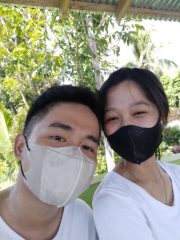
This is our first ever selfie picture love. Kanumdum pa ka ani? Kato ning padung na ka uli ba nya ni insist ko na ubanan tika huwat bus, nya mao to adto ta sa waiting shed unahan gamay sa tulay padung VSU. Simple pa atoa bond ani, we're still getting to know each other pa. Sapoton pa pud ka gamay ani love hehe, sapot daw bi? HAHAHAHA charr ahahahaha it's a process man jud diba, you're so beautifulll💗
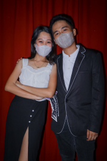
This picture kay mao na ni improved version natong duha, we're getting closer na gyud, we have made some memories together, during akwintans man ni sa CS, sige kog ana nimo ato na time na ganahan ko na maka spend time nimo during CS, i thought i can't because I'm an officer, nya basin ma busy ko, pero i found a way hehe, nya naka picture2 pd ko nimo ani with the help of other photographers. Look at us, I can see the love that's pouring between us two.💗
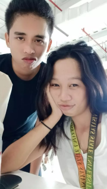
April 04, 2023: Kanumdum pa ka ani love? Mao ni ag atu uban2 sa baybay atong before mag holy week AHAHAHA, what we did during this time kay nanuroy ta kadali sa baybay and have a snack together inside the Metro shopping mall. Atu gikaon kay dunkin donuts nya with coke hehe, it was the day before the surprising event happen (The day you said yes, after sa holy week vacation).💗
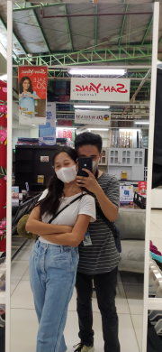
April 25, 2023: This was the day of VSU anniversarry, kani nga day kay nahan na ka muuli jud sa inyo, pero I'm begging you man na magka time tang duha kay mingawnon man ko kaayu lage HAHAHAHA, so mao to you decided na manuroy ta sa baybay and have a bonding2 after adto sa BG, Kani usa ni sa pinaka memorable na event natu, because I really have fun with this, and you made much effort para maka uban ta before ka uli sa inyo love. There's also a traumatic event ani na time during the night after sa atu uban2 sa baybay, pag pauli natu kay hapits ta naligsan ato sa car, but thanks to God, we've been saved by Him.💗
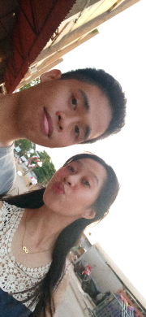
April 28, 2023: This day marks the first day we went to church and pray together. Ever since sa ato pagka ila kay we've been wanting to go to church and pray together man jud, pero mao jd ni ag time na nakalugar jd tag uban simbaaa. This was also the day nga naay student night party inig gabie sa VSU, that's the reason why you came back to VSU. After sa student night kay dugay ka nakauli sa bh kay nag tagay pa imoha ka bh, so naka stay pa ka sa amo bh nya mga almost 3pm naka ato naka uliii HAHAHAHA🤪
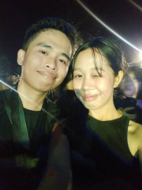
April 28, 2023: Same day sa atong pag simba. Kuyaw kaayo ni nga night kay ga sunod2 ra jud ko nimo ani love HAHHAHAHA, at the same time kay na entertain gihapon ko nimo even though kauban nimo imo dabarkads, talawan raba kaayo ko ani mabasa sa katong wet and wild HAHAHA, nice kaayo ni na time💗
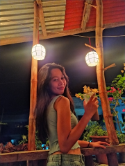
May 11, 2023: This day marks our first motmot hehe. One month of love achieved! Kani nga adlaw kay busy man kaayo akoa schedule ani, until 6:30pm, you waited para sa time na maka eats na ta. Nag simple celebration lang gud ta ani diba, nikaon ra tag fried chicken with gravy nya theos nga iced coffee ba to? Hahaha basta kay cold drink to. We had a good timeeeee💗
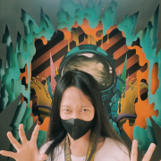
May 24, 2023: Kani aligre kaayo ni nga day para natu kay wala man tay lingaw ani, nya nahan ka na suroy2 ta ba, you have money man pd nua ani na time pero para unta to sa inyo vlog2 sa ormoc pero wala man mo nalahos ana nga time, so maong ana ka na kita nalang manuroy sa ormoc, HAHAHAH kani na time kay wala na pud kaayo koy kwarta na bilin ani kay talihurot na HAHAHA, pero i still managed to come with you, ofcourse di sayangon ag opportunity na maka uban ka. We visited the museum. Ang atua pd nabuhat ani other than suroy kay sa imoha pd photographies para sa art app na subject hahahaha, nya mi hapit pd ta sa simbahan nya nanagkot ta nya nag prays. Then after kay uli ta, funny pa jud kay abi nimo alas 5 na, bisan 4 pa HAHAHAH na ratol kag uli, so naka uli nua tag sayu. Nya tambay ta sa BG afters💗
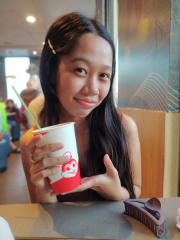
June 12, 2023: This day was our belated 2nd motmot celebration. Because during sa 11 kay naa pa man ko sa amo balay ato na time kay miuli ko. Sa kani na day ra ta naka time kay mibalik na kos baybay nya kamo sa imo barkada/classmate kay naghimu mo sa inyo entrep. HAHAHA simple belated celebration langs gihapon gud, jabee. Nakit an pa jd nako si father lago ani, pari sa amoa simbahan HAHAHAHAHAA baka naman libre jabee father hehe jokes. We always have a good timeee💗
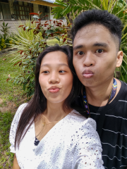
June 16, 2023: The photography day. HAHAHAHAHA also the sapot day naku nimo, nya nangluods ka, pero taud2 kay na clingy na HAHAHAHA susss mecakes pa cute man na oys HAHAHAHA sorry sa ako kasuko ani loveee, we have already talked about this na man puds HAHAHAHA, nya pagka abot nato sa BG, nag start na tag picture2, you wore a white dress nya holding a flower right below your chin, para gihapon sa inyo art app na activity. We had a little time pero worth gihapon ag every seconds na atu panag uban.💗
Motmot Greetingssss!
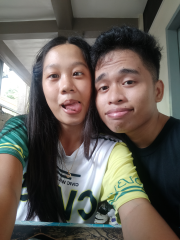
Happy 3rd Motmot Loveeee! Cringe ba mag motmot2x? HAHAHAHAHAHA sagdi langs love kay it's still a nice day to celebrate man juddd. Loveeee this is really an effort hehe. I really want to thank you for accepting me, you're really the woman that I want to have, the way you love me is the love that I really want to experience, you know how to treat me right, you know how to love me the way I deserve to be loved. Kaya rajud naku na mareciprocate tanan gugma na imo hatags naku love kay love pud tika kaayooooo. You are so precious to me, you are a treasure that I want to keep forever. Loveee, i know it's too early pa pero I wanna marry youu soon jud love, sa sakto na time, remember jd na nga kita na jud hangtud2, wala nay maka change ana love. Mahal na mahal kita, i love you loveee, happy motmot, even though we're far away right now, hinumdumi nga naa rako always sa imoha. Looking forward to our future my love, let's conquer it and make the best out of it! I LOVE YOUUUUUUUUUUUUUU. Before ka mu outs anim naa koy little story about sa atua Love. Please read hehe💗
It was an evening colored by the rain, when destiny wove its intricate threads and brought two hearts together. The girl, caught in the downpour, found herself without shelter, desperately seeking refuge under the protective canopy of an umbrella. She approached a group of people, hoping for a kind soul to lend her solace from the rain. Among them stood the boy who would soon become her love.
She mustered the courage to ask for an umbrella, yet most of the boys in the group selfishly denied her plea. However, one exceptional boy stood out from the crowd, extending his umbrella with benevolent grace. He not only allowed her to borrow it but also shared its shelter, as they walked together across the drenched streets towards their respective boarding houses, accompanied by the boy's companions. Amidst the pitter-patter of raindrops, they engaged in heartfelt conversation, each sharing fragments of their lives.
However, as they reached the other side of the road, the boy hesitated, unwilling to part with the umbrella. Regrettably, he left the girl behind, leaving her yearning for more. Fate, however, had other plans in store for them.
The following day, they unexpectedly crossed paths again, this time within the walls of a bustling gymnasium hosting a vibrant event. Oblivious to their prior encounter, the girl's memory failed to recall the boy who had offered her refuge from the rain. Nevertheless, their connection remained strong, as if a familiar bond drew them closer. The boy, an aspiring photographer, captured the girl's essence through his lens, preserving her beauty in moments frozen in time. They found solace in each other's company, laughing and cherishing the joys of the event.
Deep within the boy's heart, a blossoming desire took root, urging him to unravel the enigma that was the girl. With courage as his ally, he requested her Facebook account, yearning to delve into the realms of her existence. In the days that followed, their virtual conversations flourished, forging an unbreakable bond between them.
As time unfolded its tapestry, their affection grew, surpassing the boundaries of friendship. The boy, fueled by love's flame, summoned the courage to court the girl, persistently striving to win her heart. And in the fullness of time, her heart surrendered, uttering the cherished word: "Yes." Thus, their paths intertwined, sealing their fate as lovers and lifelong companions.
In the intricate dance of life, raindrops and an umbrella played their part, orchestrating a serendipitous encounter that forever altered the course of their destinies.